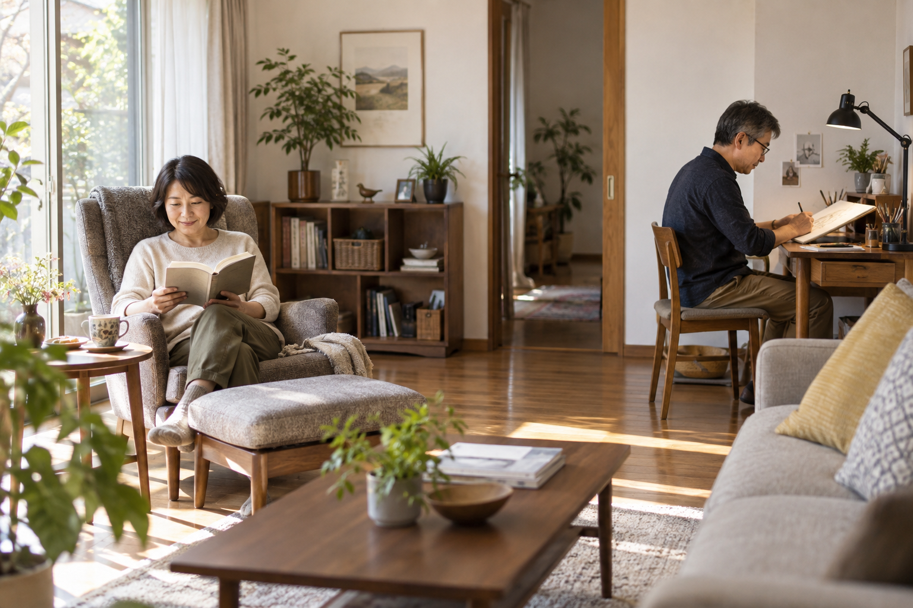

子どもの予定に合わせ、家族の荷物に合わせて使ってきた住まい。子どもが育ったあと、空いた部屋を前に「これからは何に使おう」と考える時期が来る家庭もあります。
夫婦で同じ趣味を楽しんでもいいし、それぞれ違うことに夢中になってもいい。私は、50代からこそ「今さら」ではなく、思いきり楽しめる住まいを考えてほしいと思っています。一人の時間を充実させながら、一緒に過ごす時間も大切にする。そのバランスを、間取りや家具が手伝えます。
それぞれの居場所、共有する場所、行き来する動線を基本に、家具配置から趣味部屋まで具体化。音楽・映画・ヨガを楽しむ住まいを提案します。
公開日：未定
夫婦・趣味・自分時間 文｜エイスケ（住宅と教育の専門家）
文｜エイスケ（住宅と教育の専門家）
子どもの予定に合わせ、家族の荷物に合わせて使ってきた住まい。子どもが育ったあと、空いた部屋を前に「これからは何に使おう」と考える時期が来る家庭もあります。
夫婦で同じ趣味を楽しんでもいいし、それぞれ違うことに夢中になってもいい。私は、50代からこそ「今さら」ではなく、思いきり楽しめる住まいを考えてほしいと思っています。一人の時間を充実させながら、一緒に過ごす時間も大切にする。そのバランスを、間取りや家具が手伝えます。
子育てという共通の予定が一段落すると、夫婦で過ごす時間の使い方を、あらためて考える機会が訪れます。だからといって、いつも同じことを一緒にする必要はありません。「今日は何を楽しんだ？」とお互いに話せる、それぞれの時間があってもいいはずです。
まずは、やってみたいことを別々に三つずつ、紙に書き出してみましょう。読書、裁縫、三味線、キャンプ道具の手入れ、映画、筋トレ。性別で役割を決めず、本人が心から楽しいと思うものを、正直に並べてみてください。
そのうえで、音が出るか、道具を広げる必要があるか、片づけに時間がかかるかを確認します。すると「趣味部屋が欲しい」という漠然とした希望が、「ミシンを毎回しまわなくてよい机が欲しい」という、ずっと具体的な相談に変わっていきます。
同じリビングでも、テレビを見る席と読書の席を真正面に向けない。それだけで視線の感じ方が変わります。机や椅子、パーテーションを動かし、お互いが落ち着ける配置を試してみましょう。
棚で仕切るなら、転倒対策と通路を確保し、光や風も通るようにします。視線を遮っても音は届くので、音楽や動画にはヘッドホン、練習には別室や時間の調整も役立ちます。
一週間ほど使って「ここなら落ち着く」「ここは通りにくい」と分かってから相談すると、必要な改修を絞り込めます。

キッチンの近くに、パソコンや手帳を置けるカウンターをつくる。作業のたびにダイニングテーブルを片づけずに済む、自分の席になります。水や油がかからず、椅子を引いても通れる位置を選びましょう。
一人は読書の席、もう一人は手仕事を広げられる机。広さを均等にするより、それぞれが使いやすい場所を話し合ってみてください。食事のテーブルは二人で使えるように残しておくと、自然に顔を合わせる時間も持てます。
朝の支度などでトイレが重なるなら、二つ目を設ける案もあります。給排水や換気、構造、マンションの管理規約を現地で確認し、費用と使いやすさを比べましょう。
三味線なら、防音と練習時間。裁縫なら、大きな机と手元の明かり、布地の収納。趣味を具体的に思い浮かべるほど、必要な設備も見えてきます。音の出る趣味は、隣室や近隣への伝わり方を防音の専門家と相談しましょう。
キャンプが好きなら、濡れた道具を手入れして収納できるガレージや小屋も楽しそうです。小屋を設ける場合は、敷地や法令、設置工事の条件を施工店に確認します。
趣味の改修を、ぜいたくの一言で片づけなくてもよいと私は思います。これから何年、どんな時間を楽しみたいか。予算の上限を決め、使う場面を想像しながら家族と相談してみませんか。
好きな音楽を聴く。プロジェクターで二人で映画を見る。家具や家電から始められる楽しみもあります。投影距離や部屋の明るさ、音の伝わり方を確かめながら、居場所を整えてみましょう。
筋トレ、ピラティス、ヨガなら、二人分のマットを並べられる場所をつくるのも一案です。家具やコードをよけ、階下への音にも配慮しながら、体調に合う運動を楽しんでください。
同じ部屋で、一人は読書、一人はヘッドホンで音楽を聴く。そんな時間もよいものです。趣味をそろえることにこだわらず、お互いの楽しみが続く配置を考えたいですね。
一人の時間を楽しんだあと、一緒に食事をしたり映画を見たりする。それぞれの時間と二人の時間に、心地よいバランスを見つけていきましょう。
「それぞれの居場所」「共有する場所」「行き来する動線」を残しながら、今の家を使い直す。住まいは、これからの人生を楽しむためにも変えていけます。
それぞれの時間と、食事など共有する時間の両方を大切にする提案です。
椅子の向き、机や収納の位置、仕切りや照明から試せます。
視線を遮ることと防音は別です。音には使う時間や別室などの対策も考えます。
道具、音、作業、収納を具体的にし、家族と予算を話します。
配管、換気、構造、規約などを現地で確認する必要があります。
家具やコードをよけ、体調に合う運動ができる場所を確保します。
この記事を書いた人｜エイスケ
1986年生まれ。実家の工務店・不動産に10年間従事したのち、教育の世界へ。住宅と教育、両方の視点から「豊かな暮らし」をテーマに執筆します。※本コラムは筆者個人の見解・経験に基づくものです。最終的な判断は各分野の専門家にご相談ください。